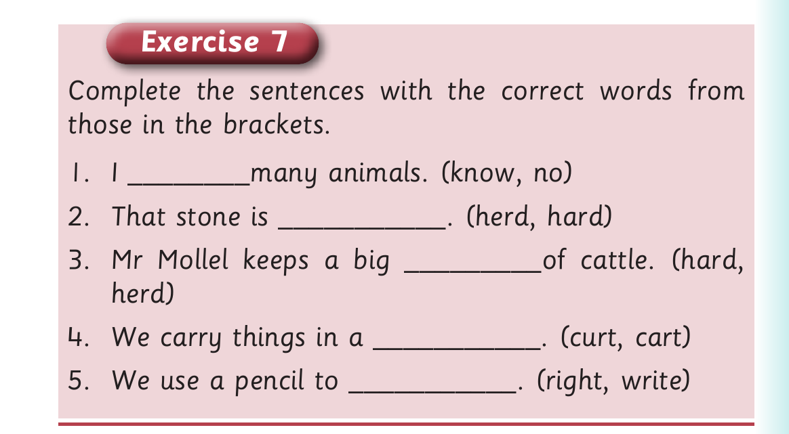

Long vowel sounds - Exercise 7
2. Pronounce the vowel found in each word in (1). Or finger spell the vowel letter in each word in (1). 3. Read aloud or sign the following sentences: (a) I spend my time on a bike. (b) I like singing with a mike. (c) There is little light at night. (d) Drawing a line is tangible. (e) I do not like tight skirts.

Exercise 7 Complete the sentences with the correct words from those in the brackets. 1. I ________many animals. (know, no) 2. That stone is ___________. (herd, hard) 3. Mr Mollel keeps a big _________of cattle. (hard, herd) 4. We carry things in a ___________. (curt, cart) 5. We use a pencil to ___________. (right, write)